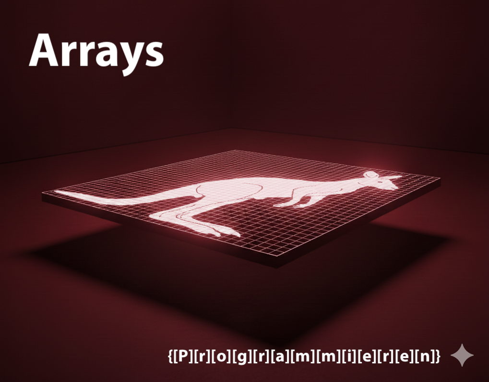
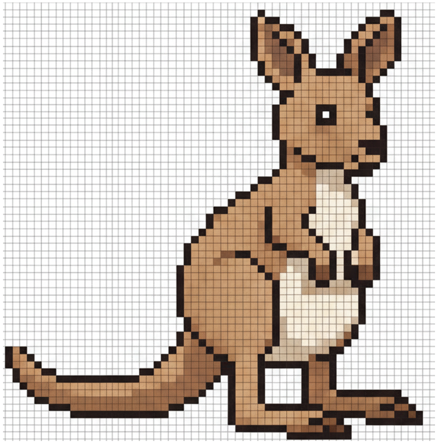
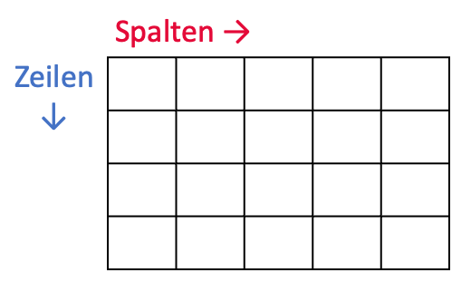
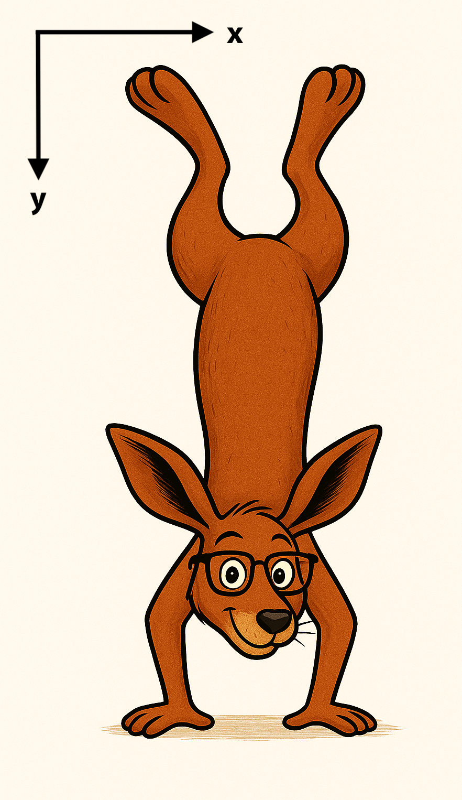
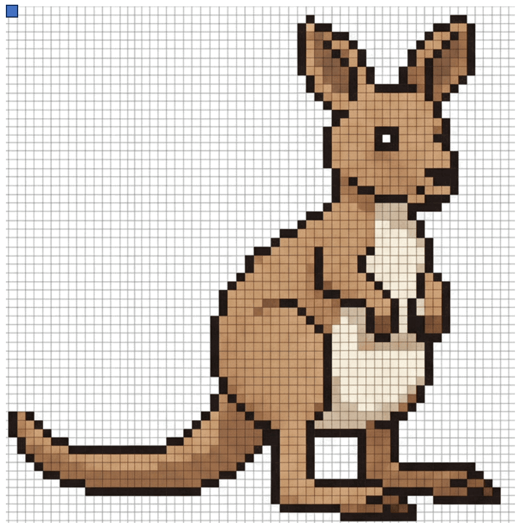
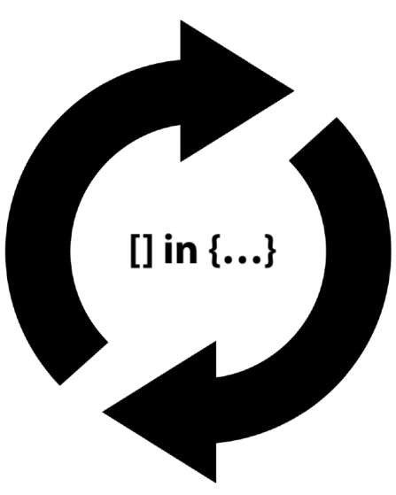

Was ist ein Array?
- Ein Array ist eine Datenstruktur, die mehrere Elemente vom gleichen Datentyp zusammenhängend speichern kann.
- Der Zugriff auf einzelne Elemente erfolgt über einen Index
- z.B. array[0] für das 1. Element
Eigenschaften von Arrays
- Feste Größe: Anzahl der Elemente nach Initialisierung nicht mehr veränderbar
- Wahlfreier Zugriff: Die Zugriffszeit auf Elemente ist konstant, egal auf welches zugegriffen wird
- Typenbindung: Alle Elemente müssen von demselben Datentypen sein
Arrays in Java
Datentyp[] arrayName = { Element1, Element2, …};
Datentyp[] arrayName = new Datentyp[Größe];
Beispiele
Zugriff, Indizes und Größe
Der Zugriff auf Elemente erfolgt mittels []-Operator:
Die Länge eines Arrays kann man mit length abfragen, z.B.
Initialisierung
- Leeres Array mit gegebener Länge:
- Feste Werte bei Deklaration:
</> Mehr Code-Beispiele
Mehrdimensionale Arrays


Datentyp[][] name = {
{ Element11, Element12, …},
{ Element21, Element22, …}
};
Datentyp[][] name = new Datentyp[Größe 1][Größe 2];
Eigenschaften
- In Java sind mehrdimensionale Arrays: »Arrays von Arrays«
- Auch hier gilt: der Datentyp ist für alle Elemente gleich
- Der Zugriff erfolgt über
[][]- Bei 2D: erst Zeile, dann Spalte
- Beispiel: ein 2D-Array
int[][]ist ein Array, dessen Elemente wiederumint[]sind.
Beispiele
Eine Tabelle können wir in Java mit einem 2D-Array abbilden, z.B.:

Beispiele: Bilder

⚠️ Bildkoordinatensystem: y-Achse ist gespiegelt
Ein Graustufen-Bild mit 1280x720 Pixeln:
Durchlaufen von Arrays
mit Schleifen

for-Schleife für Arrays
Wir können length nutzen, um eine Abbruch-Bedingung festzulegen:
»for each«

for (Datentyp item : container) {
Anweisung;
}
item und Elemente von container müssen vom gleichen Datentyp sein.
»for each«-Schleife
- Kurzschreibweise zum Durchlaufen eines Arrays ohne Index-Nutzung → Zugriff erfolgt direkt auf das Element
»for each«-Schleife
⨁ Vorteile:
- Kompakter und weniger fehleranfällig bei Indexfehlern
- z.B. Start/Ende bei
for-Schleifeund<bzw.<=
- z.B. Start/Ende bei
⊖ Nachteile:
- Kein Index: wenn man Index braucht, muss man:
- eine klassische for-Schleife nutzen bzw.
- selbst einen Zähler (
i++) zusätzlich implementieren
</> Code-Beispiele
✅ Zusammenfassung
- Elemente vom gleichen Datentyp im Array zusammenfassen
- z.B. Datenreihen, Ergebniswerte
- Wir können Arrays verschachteln für mehrdimensionale Daten
- z.B. Koordinaten von geometrischen Formen
- foreach-Schleifen: kompakter & weniger fehleranfällig (für Arrays)